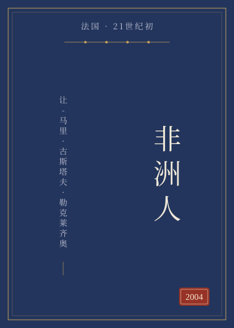
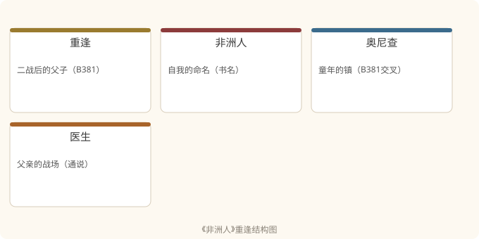

非洲人
一、基本信息
| 作者 | 让-马里·古斯塔夫·勒克莱齐奥 |
|---|---|
| 成书/出版 | 2004年（Britannica B381：L'Africain (2004)——memoir of reunion with his father after WWII） Jean-Marie Gustave Le Clezio — Encyclopaedia Britannica（百科全书） |
| 国别/地区 | 法国 |
| 时代 | 现当代 · 21世纪初 |
| 体裁 | 回忆录 |
| 语言 | 法语 |

《非洲人》重逢结构图（主题·结构图）
二、创作背景
Britannica（B381）：L'Africain——'memoir of reunion with his father after WWII'（二战后与父亲重逢的回忆录）。
Britannica（B381）：勒克莱齐奥——2008诺奖；Onitsha (1991)——'semiautobiographical, inspired by his childhood in Nigeria'（交叉）。
题材（通说待核）：尼日利亚童年与父亲的医生岁月——'非洲人'的自我命名。
三、内容脉络
（通说待核）战后与医生父亲的奥尼查重逢。
（通说待核）'非洲人'：自我的地理发现。
四、主要人物表
| 人物 | 身份 | 说明 |
|---|---|---|
| 父亲 | 战地医生 | （B381：reunion with his father） |
| 小勒克莱齐奥 | 孩子 | （通说待核） |
五、主题与艺术特点
- '非洲人'的自我命名（书名语境——通说待核）。
- 父子重逢（B381）。
- 尼日利亚童年（B381：Onitsha 交叉）。
六、影响与评论
- Britannica：L'Africain (2004)（B381）。
Jean-Marie Gustave Le Clezio — Encyclopaedia Britannica（百科全书） - Britannica：2008诺奖（B381 交叉）。
Jean-Marie Gustave Le Clezio — Encyclopaedia Britannica（百科全书）
七、阅读建议
难点
- 殖民地尼日利亚语境。
- 回忆录的'地理自传'。
- 《非洲人》中译本（人民文学等——通说待核）。
- 法文原版。
勒克莱齐奥回忆录；与《奥尼查》对读。
八、待核实
- 父亲名（乔治·勒克莱齐奥说）待核。
- 2004年出版细节待核。
- 与 Onitsha 的互文待核。